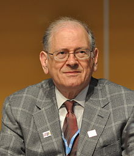

| Paul Baran | Vannevar Bush | Vinton Cerf | Douglas Engelbart |
| Robert E. Kahn | J.C.R. Licklider | Robert Metcalfe | Lawrence Roberts |
Robert Elliot Kahn (1938. december 23.)
Amerikai villamosmérnök, Vint Cerf mellett először javasolta a Transmission Control Protocol-t (TCP) és az Internet Protocol-t (IP), az alapvető kommunikációs protokollokat az internet szívében. 2004-ben Kahn elnyerte a Turing-díjat Vint Cerffel a TCP/IP-n végzett munkájukért.
Miközben a SATNET műholdas csomaghálózati projekten dolgozott, előállt az eredeti ötletekkel, amelyek később a Tcp -vé váltak, amelyet az ARPANET-ben használt korábbi hálózati protokoll, az NCP helyettesítésére szántak.
Forrás:Wikipédia